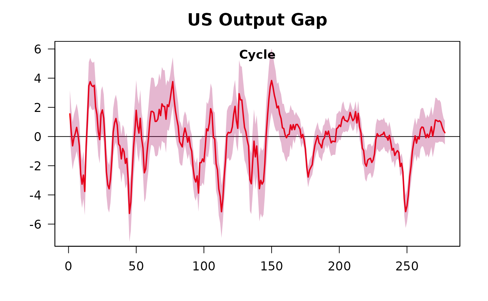

Plot
plot.bnfClass.RdPlot method for object of class "bnf"
Usage
# S3 method for class 'bnfClass'
plot(
x,
main = "BN Filter Cycle",
plot_ci = TRUE,
col = "red",
secondary_col = "blue",
lwd = 2,
...
)Arguments
- x
object of class "bnf" output of bnf
- main
character, plot title
- plot_ci
logical, include cycle confidence interval
- col
character, primary color or hexcode
- secondary_col
character, secondary color or hexcode
- lwd
numeric, line width
- ...
other arguments, not used
Examples
data(usdata)
y <- transform_series(y = usdata$GDPC1, take_log = TRUE, pcode = "p1")
bnfOutput <- bnf(as.vector(y),
delta_select = 2,
demean = "dm",
iterative = 100,
dynamic_bands = TRUE,
adjusted_bands = TRUE,
outliers = c(293, 294),
window = 40,
ib = TRUE)
plot(bnfOutput, main="US Output Gap")
#> Warning: data length differs from size of matrix: [2 != 1 x 1]
